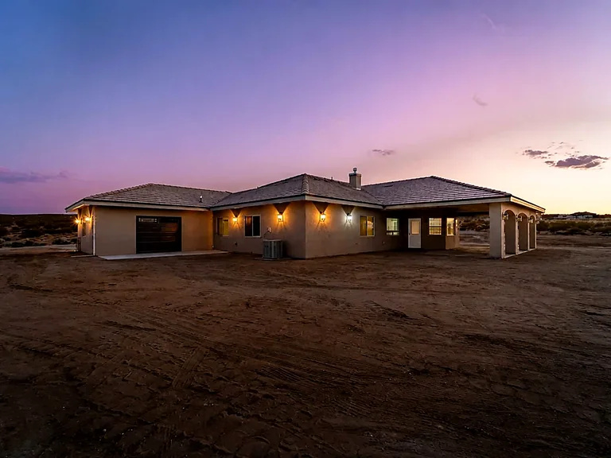

One person to ask
Questions and updates go to the person actually running the build, not to a message desk that passes them along.
About High Desert Development
Since 1999. One contractor who is on site rather than on a phone, with the trades kept in house instead of bid out job to job.

Meet the contractor
Jerry Heller brings more than 30 years of construction experience to every project. His work spans custom homes, residential renovations, commercial buildings, underground utilities, concrete, framing, dirt work, and septic and sewer installation.
The part worth knowing is that he does not hand your job to somebody else once it is signed. Jerry is on the site. That is deliberate, and it is why the company stays the size it is.
He is also a certified home inspector. He walks his own jobs the way an inspector walks a finished house, looking for what would get flagged while it is still easy to fix, not after it is covered up.
Construction is a meaningful investment. Jerry’s goal is to make that process easier to understand by planning carefully, answering questions, providing updates, and giving each project the attention it deserves.
High Desert Development works with homeowners shaping a more useful living space and businesses preparing to build or expand, roughly a hundred miles in every direction across Kern, Los Angeles and San Bernardino counties. That range of experience allows the team to see how individual trades connect and to keep the larger project in view.
How we work
Questions and updates go to the person actually running the build, not to a message desk that passes them along.
Utilities, concrete, framing and finish are all ours, so each phase is planned against the finished project rather than against a subcontractor’s calendar.
The same crew carries a job from the trench to the finish, so nobody is working around a stranger’s mistakes. Jerry checks the work himself because it is his name on the sign.


Rooted in the High Desert
Jerry’s interest in building and design began early and grew into a career centered on helping clients bring useful, lasting spaces to life. Away from the job site, he values family time, community involvement, learning new building techniques, and exploring the desert.
Start a Conversation